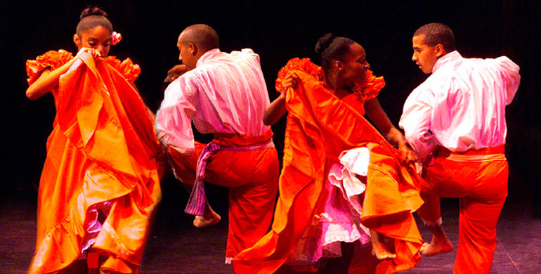
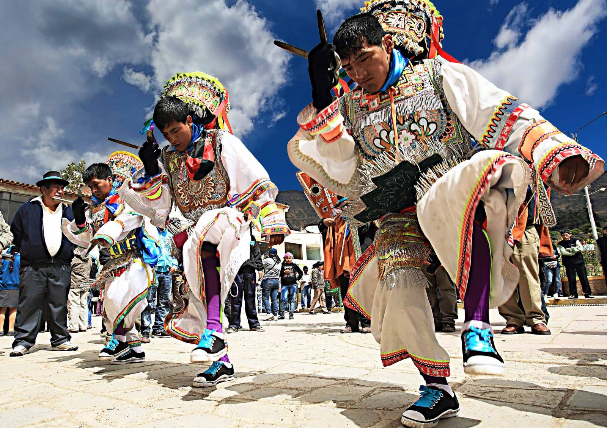
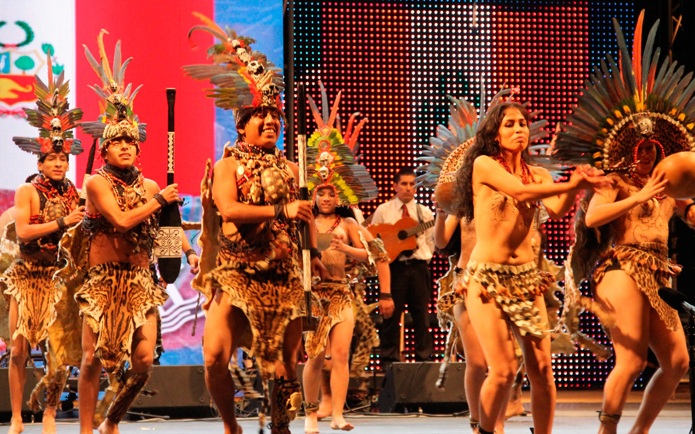

Quiénes somos
Nuestra misión es preservar, difundir y revalorizar las danzas tradicionales del Perú como patrimonio cultural vivo...
Visión
Para el año 2035, ser la institución líder a nivel nacional e internacional en la promoción y difusión de la danza tradicional peruana...
Misión
Consolidarnos como un puente que conecte a las nuevas generaciones con sus raíces, fomentando el aprendizaje...